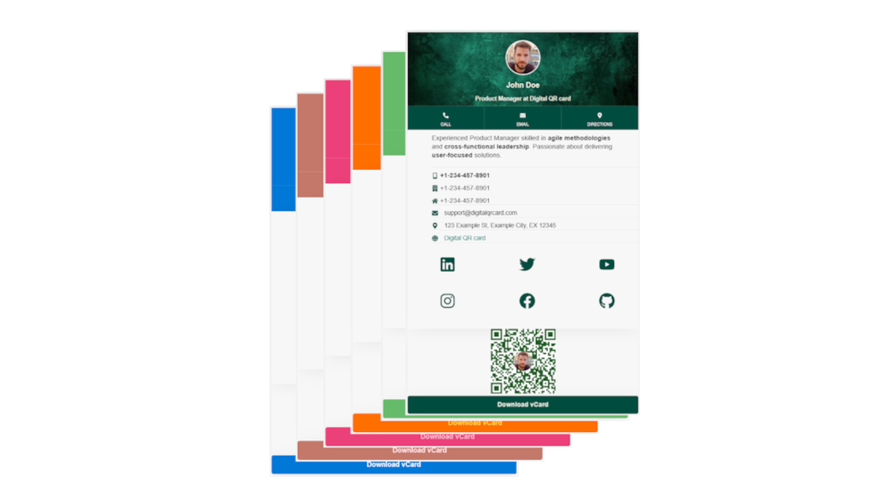
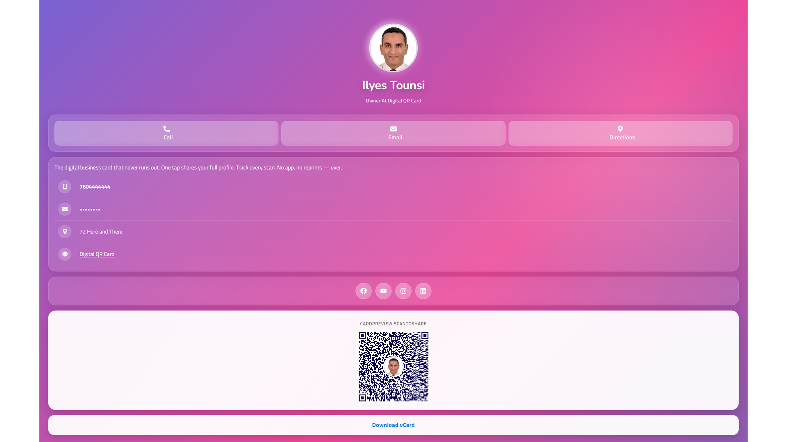
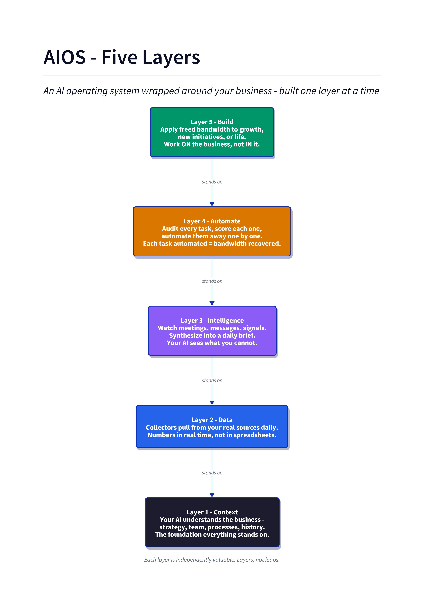
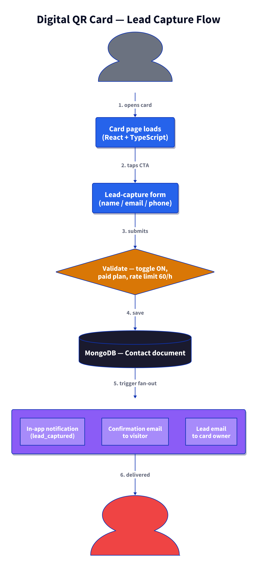

Mohamed Ilyes Tounsi
Full-Stack Software Engineer · AI/ML Integrator · Founder
Carlsbad, CA, USA · +1 (760) 481-4120 · tounsils@gmail.com linkedin.com/in/mohameditounsi · github.com/tounsils · digitalqrcard.com
Professional Summary
Full-stack software engineer and engineering leader with 20+ years of experience shipping production web platforms end-to-end — architecture, backend APIs, cloud infrastructure, frontend, data pipelines, and CI/CD. Over the last three years I've layered AI/ML integration on top of that foundation: LLM applications, RAG pipelines, MCP-based agent orchestration, voice, semantic search, and human-in-the-loop workflows. Current focus splits across a fractional senior engineering role at NXT Robotics (~60%), an advisory VP-of-Engineering role at AIMIA (~20%), part-time engineering at Hydrostasis (~20%), and solo-founder work on digitalqrcard.com.
I'm a software engineer first. AI is a tool in the stack, not the whole stack.
Core Skills
Languages & Frameworks — TypeScript, JavaScript, Python, PHP, Go (reading), Node.js, React 18, Next.js 15, Vite, FastAPI, Express, Hono, Fastify, Laravel, GraphQL, REST.
Frontend — React, Next.js, Vite, Tailwind CSS, Radix UI, Chakra UI, TanStack Router/Query, styled-components, CustomTkinter (desktop), responsive design systems.
Backend & Cloud — Node.js, Python (FastAPI, Django), Docker, Kubernetes, AWS (ECS, EC2, S3, CloudFront, Route 53, Lambda, CloudFormation, EventBridge, Secrets Manager), Vercel, Railway, Neon, Supabase, GitHub Actions.
Data & Storage — PostgreSQL, MongoDB, ChromaDB, Firestore, SQLite, Drizzle ORM, Prisma, ETL pipelines, data modeling, vector embeddings.
AI/ML Integration — Anthropic Claude SDK, OpenAI, Google Vertex AI / Gemini, Groq, ElevenLabs voice, HuggingFace embeddings, MCP (Model Context Protocol) orchestration, RAG pipelines, semantic search, human-in-the-loop workflows, weak-supervision labeling.
Testing & Quality — TDD, Jest, PHPUnit, Playwright, Autocannon, unit / integration / E2E.
Delivery & Leadership — Agile/Scrum, Jira, ClickUp, Asana, distributed team leadership, mentoring, code review at scale.
Experience
Senior Software Engineer — NXT Robotics (Remote) · Fractional (~60%) · 2025 – Present
- Improved frontend, backend, and APIs powering robot control, monitoring, diagnostics, and command dashboards.
- Integrated AI/ML into robotic decision-making pipelines.
- Multi-module architecture: React dashboard, Python deploy tooling, Node workers, financial dashboard, internal "nxt-brains" services.
- Stack: React + Ant Design + Redux + Chart.js, Python, Node, ElevenLabs, Laravel, PHP, AWS, Docker, REST APIs.
VP of Engineering (Advisory, Part-time ~20%) — AIMIA (Remote) · San Diego, CA · 2025 – Present
- Advise on engineering strategy for a distributed software, platform, QA, and data team.
- Architect and oversee an AI-powered career advisory platform: FastAPI + Node backend, React + Next.js frontend, MongoDB, AWS.
- Establish CI/CD pipelines, deploy on AWS (ECS, EC2, Route 53), and maintain production reliability.
- Mentor engineers; instill disciplined execution across Agile teams.
- Stack: Node.js, Python, FastAPI, Express, Next.js, Tailwind, MongoDB, GitHub Actions, AWS, Docker.
Software Engineering Manager — Zembra (Remote) · San Diego, CA · Sep 2024 – Nov 2024
- Led a fullstack team of 6 delivering core platform features Agile-style.
- Architected web apps and REST APIs using Node.js, React, PHP, SQL.
- Scrum Master; facilitated sprints and cross-team collaboration.
GIS Enterprise Architect — geoConvergence (Remote) · Bloomington, IN · 2023 – 2024
- Architected high-availability GIS solutions and microservices on AWS (Lambda, CloudFormation, EventBridge).
- Ensured reliability, scalability, and secure deployment of data pipelines and GIS applications.
- Stack: AWS, PostgreSQL, Esri ArcGIS, Docker, CloudFormation, EventBridge.
Colonel & Intelligence Fusion Center Manager — Tunisian Ministry of National Defense · 2001 – 2022
- Led software engineering efforts as a senior manager: architecture, delivery, team performance for mission-critical systems.
- Built scalable PHP-based platforms for eCommerce and marketing.
- Directed intelligence data consolidation into a real-time analytics dashboard with interactive visualizations ("Intelligence Data Lake").
- Stack: PHP, MySQL, Node.js, Leaflet.js, REST APIs, Docker, GitHub.
Featured Project — Digital QR Card (digitalqrcard.com)
Solo founder & operator. B2C business selling customizable QR-based digital business cards with built-in lead capture — the differentiator vs Popl / HiHello / Linq / Blinq / Mobilo, all of which treat the card as the product. We treat the connection as the product.
Master hook: "Every scan becomes a lead." Primary audience (last 90 days): Real estate agents — open houses, listing presentations, walk-through follow-up.
The product
Every card is fully customizable — theme, color, layout, socials, QR — and lives at a persistent URL so the info never goes stale.

The scan target: a live, mobile-first profile card with call / email / directions actions, socials, vCard download, and (the moat) an active lead-capture form.

System architecture
The platform is more than the product page — it's a modular AI Operating System (AIOS) wrapped around the business. Five layers, installed one at a time:

| Layer | Responsibility |
|---|---|
| Context | Machine-readable business truth (strategy, offers, brand, personal info). Every AI session boots with /prime to load it. |
| Data | Daily collectors pull real numbers from analytics, Stripe, Shopify, ad platforms. |
| Intelligence | Meetings, messages, and signals synthesized into a daily brief. |
| Automate | Every recurring task audited, scored, and automated one at a time. |
| Build | Freed bandwidth applied to growth, product, and net-new initiatives. |
Lead-capture flow — the moat
Every scan of a Digital QR Card lands on a personalized profile with an active lead-capture form (vs the passive vCard download every competitor ships). The lead flows straight into the owner's inbox and CRM.

What I built (technical)
- Product surface: React + TypeScript customizable card builder; QR renderer; profile page with lead-capture form; Stripe checkout; MongoDB-backed profiles.
- AIOS runtime: Claude-Code-driven modular workspace — slash commands (
/prime,/install,/create-plan,/implement,/share,/deck,/youtube-screencast) that operate on context files, plans, and outputs stored in the repo. - Diagram engine: D2 source files rendered to PNG for docs, decks, and this résumé — same PNGs embedded above.
- Content pipeline: YouTube-first content system, 9 pieces/week across LinkedIn / IG / TikTok / Facebook, with a
writing-styleskill enforcing anti-AI-slop copy. - Deck builder: Marp-based Markdown-to-PPTX pipeline branded to digitalqrcard.com.
- Guardrails:
human-in-the-loop by default,local data by default,borrow before you build— encoded as workspace principles, not aspirational slogans.
What I built (business)
Solo across product, marketing, sales, ops. Currently in the customer-acquisition sprint: reach $8,000/month within 90 days. Everything upstream (product, pricing, packaging) already stabilized; the binding constraint is monthly visitors, which the content pipeline is designed to unblock.
Founding member of the AAA Accelerator cohort (aaaaccelerator.com) — the AI business launch & AIOS program that seeded this architecture.
Featured Client Engineering
NXT Robotics — Unified robotics operations dashboard
Multi-module system consolidating robot control, monitoring, diagnostics, financial ops, and voice-driven "cockpit" interaction into a single operations surface for a robotics company. Ongoing senior engineering role; cockpit demo in flight.
- Sub-modules I contribute to:
dashboard-react-js(operator UI),dashboard-api(backend),dashboard-deploy(Python deployment tooling),P-NXT-financial-dashboard(revenue/ops view),nxt-brains(internal service). - What's interesting: heterogeneous stack unified behind one operator experience; voice channel via ElevenLabs; Chart.js-backed real-time telemetry; Redux state across long-running dashboards.
- Stack: React 18, Ant Design, Redux, Chart.js, Node, Python, Laravel, PHP, ElevenLabs, AWS, Docker, REST APIs.
Hydrostasis — Retool admin portal with Test → Prod promotion pipeline
Admin portal for Hydrostasis (intern summer 2026 engagement). Phase 1 promoted to production; phase 2 (webhook integrations) in flight.
- What's interesting: wrote
promote.js— a scripted Test → Prod promotion workflow for Retool app definitions, so deployments are diff-reviewable and reversible instead of manual copy-paste (which is the Retool default and a common source of prod breakage). - Modern Vite / TanStack Router / TanStack Query / Radix UI stack layered over Retool's admin primitives.
- Stack: Node, Vite, TanStack Router/Query, Radix UI, Retool.
Featured Personal AI / ML Projects
AIOS — AI-voice QR card + realtor pilot
The engineering repo behind digitalqrcard.com (see hero project above). Realtor B2B validation sprint underway with Jake Rose pilot.
- Stack: Node, Express, MongoDB, ElevenLabs, Stripe.
SEAM — Synthetic Intelligence Training Data Generator
"Plan first. Generate second. Provenance receipt attached." A local Node application that produces defensible synthetic training packets for intelligence-analyst instructors — the classified case files real analysts learn from are, by definition, unteachable, so this generates realistic non-classified equivalents from four card taps and about ninety seconds of compute.
- Five-stage pipeline (
world → artifacts → verifier → provenance → packet):- Claude Sonnet builds the underlying truth of the case as a structured JSON world model (entities, timeline, evidence chain, answer key). Zod-validated.
- Claude Sonnet derives each artifact (cables, banking records, social posts, intercepts) from that world — nothing invented at this layer.
- Claude Haiku reads every artifact back against a versioned seam taxonomy and flags temporal / geographic / identity / financial / linguistic contradictions.
- A machine-readable provenance receipt names the exact models used, taxonomy version, guardrails applied, and human sign-off status.
- A single PDF assembles cover + artifacts + receipt — the printed packet the instructor hands to the class.
- Why the shape matters: naive multi-document LLM generation drifts — ask one prompt for 50 artifacts and by artifact 8 the model has forgotten what it said on artifact 3. Committing truth to a world model first, then deriving rather than re-generating, kills that drift. The Haiku verifier catches whatever survives.
- Two front doors on the same pipeline: a Fastify web UI (card-stack interface the instructor drives) and a
seamCLI (interface the developer drives) — both call the same orchestrator. - Target users: federal intelligence schoolhouses (primary), academic programs (Mercyhurst, AMU, MiraCosta CSIT), Five Eyes partner training, corporate threat-intel onboarding.
- Stack: TypeScript (strict), Node, Fastify, Anthropic Claude Agent SDK (Sonnet + Haiku), Zod, YAML case configs, PDF assembly.
hitl-social — Human-in-the-loop social monitoring & lead approval
Python service that monitors social channels, uses an LLM to score / classify potential leads, and routes candidates through a Slack approval flow before any outbound action. LinkedIn variant in a sibling repo.
- What's interesting: interactive Slack Block Kit UI for approve / reject / edit; explicit HITL boundary — the LLM never posts autonomously.
- Stack: Python, FastAPI, Groq LLM, Slack SDK.
PurifiedFeed — Content-moderation monorepo
Turborepo platform combining a Next.js dashboard, an Express ingestion service, Firestore storage, and Google Gemini for content classification.
- Stack: Turborepo, Next.js 15, Express, Firestore, Google Gemini, TypeScript.
Archestra fork (via P-algora-bounties) — MCP orchestrator contribution
Contributor to an MCP-native governance / orchestration platform (Go backend, Docker/Kubernetes). Companion Python bounty-watcher script tracks Algora open bounties.
- What's interesting: production-grade MCP orchestrator surface — real-world exposure to MCP server auth, tool discovery, and multi-tenant governance patterns.
RevenueSignalAI — Multi-tenant lead-gen automation platform
A two-product suite plus its own marketing surface, aimed at converting external signals (city permits, YouTube niches, social) into qualified sales leads for SMB clients.
automation-app— Multi-tenant YouTube content-automation platform. Express / Prisma backend + Next.js frontend, with JWT-authenticated admin panel for tenant/user provisioning, Google/YouTube OAuth per tenant, encrypted OAuth tokens at rest (32-byte base64 key), and topic-to-short generation via Google Gemini. Each tenant gets isolated channels, credentials, and post history.BarnesCo_Permit_Monitor— Production Python scraper deployed for a real client (Barnes & Co). Polls City of San Diego + San Diego County public permit databases every 15 minutes for senior-housing permits (assisted living, memory care, nursing facilities), emails matched leads to the sales team via Gmail App Password, and appends to a CSV withcontacted/notescolumns so the sales team tracks follow-up directly in the sheet.RevenueSignalAI.com— Static Next.js marketing site.- What's interesting: encrypted-at-rest OAuth token storage; per-tenant credential isolation; the permit-monitor is a "boring but works" counterexample to over-engineering — one Python file, cron loop, actual leads.
- Stack: Next.js 15, Express, Prisma, PostgreSQL / Supabase, TypeScript, Google Gemini, YouTube Data API, Python, cron. Web on Vercel, worker on Railway.
Snorkel task-authoring factory
In-flight task-authoring pipeline for domain-specific ML labeling competitions. Focus on repeatable task specs, weak-supervision heuristics, and rapid iteration on label functions.
Featured Full-Stack Projects (SWE-heavy)
DigitalQRCard-FullStack — Predecessor architecture
The pre-AIOS version of what became digitalqrcard.com. Full React/TypeScript frontend + Node/TypeScript backend + Docker + MongoDB. Superseded but demonstrates the domain trajectory and end-to-end delivery pattern.
Dropshipping platform
Next.js 15 + Prisma + next-auth 5 e-commerce with Cheerio-based scraping and Groq LLM enrichment; admin user provisioning scripts.
HomeServiceHub — Booking / management app
React + Express + Radix UI + Drizzle ORM + Neon serverless Postgres. Vite + TypeScript build; esbuild-bundled server.
Timecards — Local time tracker (shipped)
Python + tkinter + SQLite desktop app; v1.0 released, v1.1 planned (idle detection, code-signing, Microsoft Store distribution). Tray badge, soft-delete, overlap detection, light/dark theme.
GreenGearCA — Eco hiking blog + shop
Node + React + Tailwind, Markdown-driven blog engine.
tn76.com portfolio & satellite sites
Personal portfolio (TypeScript + React 18 + Vite + Chakra UI + Recharts) plus a family of satellite properties on subdomains — radio/TV streaming (P-tn76-radiotv) and AI-post-gen-to-Blogger syndication (P-trends.tn76.com).
PurifiedFeed / Reddit Devvit / Video-editor-python
See personal AI/ML section for full-stack pieces that also demonstrate frontend + tooling breadth.
Meta Project — Personal Portfolio Index & Contractor Income System
Because the portfolio spans ~40 concurrent projects and multiple income streams, I built a lightweight AIOS-lite for myself: a Markdown-based operating layer that keeps the whole picture coherent across Claude Code sessions and human-only editing.
- PROJECTS-INDEX.md — human-editable source of truth. One table per group (Client / Org / Personal-active / Personal-warm / Personal-dormant / Other) with purpose, stack, status, last-touch, and cross-references to income streams.
- CONTRACTOR-INCOME/ — weekly income rollup (INCOME-TRACKER.md) across Snorkel, Algora, Mercor, DataAnnotation, Scale, ClifyX/Meta + a recurring Monday MERCOR-CHECKLIST.md with interview-prep notes.
- Memory mirror at
~/.claude/projects/c--dev/memory/projects_overview.md— auto-loaded into every Claude Code session underC:\dev, so any project session inherits awareness of the other 39. - Update discipline: trigger phrase (
"update the projects index") refreshes both index + memory in the same turn; Friday ritual captures anything I forgot to log during the week.
Small project, but it's the reason all the above stays organized enough to ship.
Contract & ML Data Work
Active contractor across ML data, weak-supervision, and bounty platforms — informs the featured LLM/RAG work above.
- Snorkel AI — task authoring for domain-specific labeling factories.
- Algora — open-source bounties (see Archestra above).
- Mercor — active on the Instant Offers pipeline.
- DataAnnotation, Scale AI, ClifyX / Meta — LLM data annotation, evaluation, and red-teaming assignments.
Current Client Engagements (Freelance)
- Hydrostasis — Part-time (~20%) Retool admin portal engineering (summer 2026). Node / Vite / TanStack / Radix. Phase 1 promoted to prod; phase 2 (webhooks) in flight. Includes a scripted Test → Prod promotion workflow (
promote.js). - Individual SWE contracts — Ongoing engineering-for-hire work for private clients. Recent example: loading a 49-software PLR bundle into an existing self-hosted OpenCart store with automated digital delivery, Stripe + PayPal integration, and a product-page redesign to match a reference storefront.
- GBDT — Deliverables and research assets around gradient-boosted-decision-tree workflows.
- geoSecureTech — React 18 + Vite + Bootstrap 5 dev site with i18n.
Education
- M.S. in Systems Technology — U.S. Naval Postgraduate School, 2012
- M.Eng. in Remote Sensing & GIS — Université Pierre & Marie Curie, 2002
- B.Eng. in Telecommunications — Aviation School of Borj El Amri, 2001
Training
- Critical Thinking — NATO School, 2018
- Strategic Intelligence Leadership Course — U.S. Defense Intelligence Agency, 2018
- Geographic Information Systems — U.S. Federal Bureau of Investigation, 2017
- Intelligence, Surveillance & Reconnaissance — Torchlight (UK), 2017
- Big Data, Data Science, ML, IoT — EuraNova Experts, 2016
- Geo Database Management & Maintenance — U.S. National Geospatial Intelligence Agency, 2016
- AAA Accelerator (2026) — AI business launch & AIOS program (basis for the Digital QR Card architecture above).
Languages
- English — Fluent
- French — Fluent
- Arabic — Native